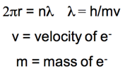

Week 4 - Day 2
Navigate using audio
Announcements
- average was about a 68% for test 1
Ch 3 - part 3
Phet simulation
- standing waves
- Audio 0:00:41.936541
Applying Wave Theory
Why is e- energy quantized?
- Audio 0:01:44.988052
- De Broglie (1924) reasoned that e- is both particle and
wave.
- Electron is a particle but has wave properties
- Particles therefore must have both wave and particle properties
- Audio 0:03:05.742985
- 
Schrodinger Wave Equation
- Audio 0:04:54.889022
-
- Don’t have to know this
- H is an operator
- Audio 0:06:08.804355
-
- In 1926 Schrodinger wrote an equation that described both the particle and wave nature of the e
- H is called an “operator”: in this case taking the second derivative with respect to x, y, and z. E is the energy
- Solution is a wave function: Ψ
- Audio 0:06:34.389254
- energy of e- is given by Ψ
- Ψ2 is the probability of finding e- in a volume of space
- A simple example of a wavefunction is:
- Ψ=Asin(x)
- energy of e- is given by Ψ
- Audio 0:08:02.302205
- Ψ^2 is the probability of finding e- in a volume of space
- Audio 0:09:23.819222
- Schrodinger’s equation can only be solved exactly for simple systems (H atom). Must approximate its solution for multi- electron systems.
- Our approximations though are good enough to work in practical application
- Horizon made it to Pluto for example
Quantum Numbers: The Solutions from the Wave Function, ψ
- Audio 0:12:06.144429
- Calculations show that the size, shape, and orientation in space of an orbital are determined by three integer terms in the wave function.
- Quantize the energy of the electron
- These integers (solutions) are called quantum numbers.
- There are four quantum numbers:
- Principal quantum number,n
- Energy level
- Principal quantum number,n
- Angular momentum quantum number, l
- Orbital type
- There are four quantum numbers:
- Magnetic quantum number, ml
- Audio 0:14:21.378733
- Position of orbital in an X-Y-Z plot
- Spin quantum number, ms
- Orientation of the spin of the electron
- These quantum numbers control how electrons are distributed in an atom
Principal Quantum Number, n: The Energy Level
- Audio 0:15:13.929935
- It characterizes the energy of the electron in a particular orbital.
- It is Bohr’s energy level.
- Values of n can be any whole number integer >= 1.
- It determines the size (overall) and energy of an orbital.
- The larger the value of n, the more energy the orbital has.
- The larger the value of n, the larger the orbital.
- Audio 0:17:10.934989
- Energies are defined as being “negative.”
- An electron’s energy is lowered (made more negative) as a result of its interaction with the nucleus of the atom.
- An electron would have E = 0 when it escapes the atom.
- As n gets larger, the following occurs:
- The amount of energy between orbitals gets smaller.
- The energy of the orbital becomes greater (less negative).
- An electron’s energy is lowered (made more negative) as a result of its interaction with the nucleus of the atom.
-
- Won’t have to memorize this, but will need to know the energy is about 1/n^2
- Rydberg constant for hydrogen (R_h) is 2.10 * 10^-8 J
Principal Energy Level in
- Audio 0:18:47.513089
Angular Momentum Quantum Number, l: The Orbital Quantum Number
- Audio 0:19:37.169700
- The angular momentum quantum number determines the shape of the orbital.
- l can have integer values from 0 to (n – 1).
- Ex n = 1
- Only l=0 is allowed
- n = 2
- l = 0 or l = 1 are allowed
- Ex n = 1
- l can have integer values from 0 to (n – 1).
- Each value of l is designated by a particular letter that
designates the shape of the orbital.
- s orbitals are spherical.
- p orbitals are like two balloons tied at the knots (dumbbell shape).
- d orbitals are mainly like four balloons tied at the knots.
- f orbitals are mainly like eight balloons tied at the knots.
Magnetic Quantum Number, ml: The Position or Orientation Quantum Number
- Audio 0:22:55.744076
- The magnetic quantum number is an integer that specifies the orientation of the orbital.
- The direction in space the orbital is aligned relative to the other orbitals
- Values are integers from −l to +l.
- Including zero
- Gives the number of orbitals of a particular shape
- When l=2,the values of ml are−2,−1,0,+1,+2, which means there are five orbitals with l = 2.
Describing an Orbital
- Audio 0:24:11.173521
- Each set of n, l, and ml describes one orbital.
- Orbitals with the same value of n are in the
same principal energy level.
- Also called the principal shell
- Orbitals with the same values of n and l are said to be in the same sublevel.
- Also called a subshell
Illustration of Energy Levels and Sublevels
- Audio 0:25:57.120934
Energy Levels and Sublevels
- Audio 0:26:50.216152
- In general:
- The number of sublevels within a level = n
- the number of orbitals within a level = 2l + 1
- The number of orbitals in a level = n^2
Quantum Leaps
- Audio 0:27:59.907574
-
- When an electron falls from a higher to lower energy level, light is emitted
- An unstable state is when an electron is sitting in a state greater than 1
- When an electron falls from a higher to lower energy level, light is emitted
How Does the Quantum Mechanical Model of an Atom Explain Atomic Spectra?
- Audio 0:29:26.973235
- Each wavelength in the spectrum of an atom corresponds to an electron transition between orbitals.
- When an electron is excited, it transitions from an orbital in a lower energy level to an orbital in a higher energy level.
- When an electron relaxes, it transitions from an orbital in a higher energy level to an orbital in a lower energy level.
- When an electron relaxes, a photon of light is released whose energy equals the energy difference between the orbitals.
It Explains Electron Transitions
- Audio 0:30:54.218927
- To transition to a higher energy state, the electron must gain the correct amount of energy corresponding to the difference in energy between the final and initial states.
- Electrons in high energy states are unstable and tend to lose energy and transition to lower energy states.
- Each line in the emission spectrum corresponds to the difference in energy between two energy states.
It Predicts the Spectrum of Hydrogen
- Audio 0:31:35.930644 • For an electron in an energy state n, there are (n–1) energy states it can transition to. Therefore, it can generate (n – 1) lines.
Energy Transitions in Hydrogen
- Audio 0:32:20.175336
- The energy of a photon released is equal to the difference in energy between the two levels the electron is jumping between.
- It can be calculated by subtracting the energy of the initial state from the energy of the final state.
- Don’t have to memorize this, just remember the 1/n^2 part
Transitions
- Audio 0:36:02.535972
Example problem
- Audio 0:37:09.180400
- Calculate the wavelength (in nm) of a photon emitted by a hydrogen atom when its electron drops from the n = 5 state to the n = 3 state.
- Calculate the wavelength of the light emitted by a hydrogen atom during a transition of its electron from the n = 4 to the n = 1 principal energy level. Recall that for hydrogen En = -2.18 * 10-18 J*(1/n2)
- Audio 0:44:32.880831 A) 97.3 nm B) 82.6 nm C) 365 nm D) 0.612 nm E) 6.8 * 10-18 nm
-
A
- Audio 0:45:56.374508
- It is possible to determine the ionization energy for hydrogen using the Bohr equation. Calculate the ionization energy for an atom of hydrogen, making the assumption that ionization is the transition from n=1 to n=infinity (RH=2.18 x 10-18 J) A) -2.18 × 10-18 J B) +2.18 × 10-18 J C) +4.59 × 10-18 J D) -4.59 × 10-18 J E) +4.36 × 10-18 J
- B
Vocab
| Term | Definition |
|---|---|
| quantum numbers | integer solutions to the wave functions (energy level n, orbital level l, magnetic quantum number m_l, and spin quantum number m_s) |
| (quantum number) n | quantum number which controls the size and energy of an orbital |
| (quantum number) l | quantum number which controls the shape of the orbital |
| s orbital shape | spherical |
| p orbital shape | like two balloons tied at the knots |
| d orbital shape | like four balloons tied together |
| f orbital shape | like eight balloons tied together at the knots |
| m_l (quantum number) | quantum number which controls the position or orientation of orbitals |
| sublevel (subshell) | orbitals with the same values of n and l are said to be in the same _ |
| excited | An electron is said to be this when it transitions from an orbital of lower energy to an orbital of higher energy |
| relaxes | An electron is said to do this when it transitions from an orbital of higher to lower energy |